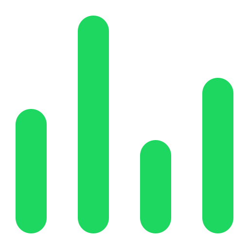
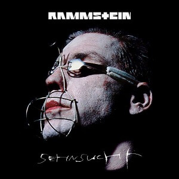
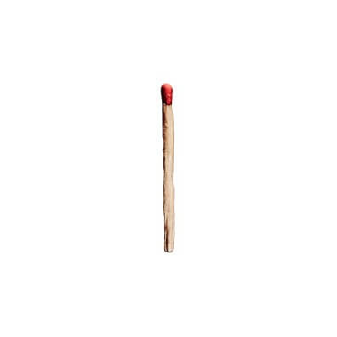
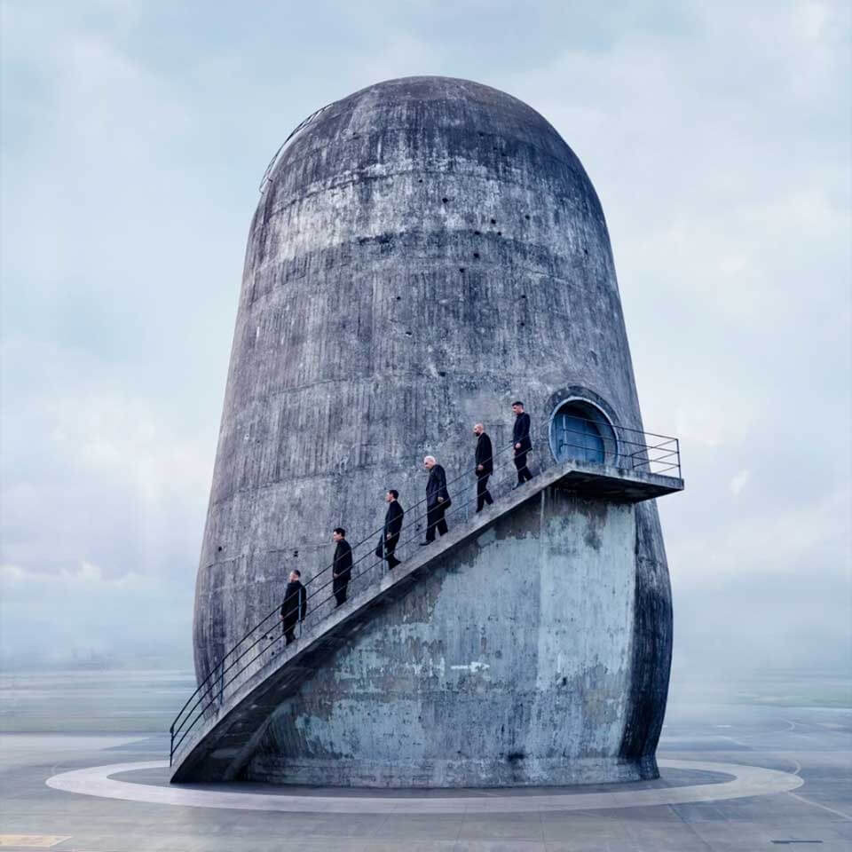
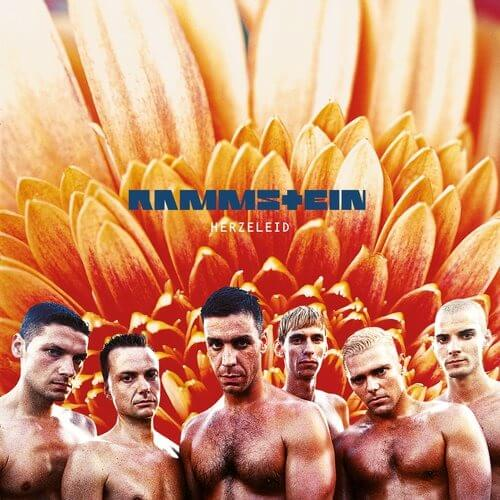

Artista verificado
Artista verificado
Rammstein
12.830.504 oyentes mensuales
Populares

Sonne
495.427.829
4:32
···
2

Du hast
580.557.00
3:55
···
3

Deutschland
467.776.245
5:22
···
4
Engel
289.556.724
4:24
···
5
Feuer frei!
242.224.897
3:08
···
Discografía
Rammstein
2019 · Álbum

Zeit
2022 · Álbum
Sehnsucht
1997 · Álbum

Herzeleid
1995 · Álbum